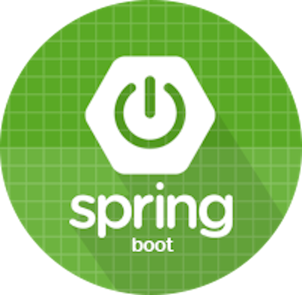

SKILLS





EDUCATION
University of Massachusetts - Lowell | Bachelor of Science in Information Technology | Nov 2016 - Feb 2019
Old Dominion University | Bachelor of Arts in English | Aug 2005 - Dec 2009
EXPERIENCE
Global Technical Systems | Virginia Beach, VA
Technial Writer/Data Manager | Jun 2023 – Present
- Develop work instructions for new cabinet hardware assembly
- Assist with developing and proofreading engineering reports
- Assisted with editing electronic technical manuals using Adobe Framemaker
- Review documents for compliance with government standards before submitting to government personnel
MONDELEZ INTERNATIONAL | Norfolk/Virginia Beach, VA
Nabisco Sales Service Merchandiser | Mar 2023 – Present
- Ensure Nabisco brands (Oreo, Ritz, Belvita, Chips Ahoy, etc) are properly stocked and maintained in assigned territory for local grocery stores such as Walmart, Target, Harris Teeter, Kroger, and Food Lion.
- Order products to replenish shelves for optimal stock conditions
- Assemble promotional displays for products
DECISIONS | Virginia Beach, VA
Technical Writer | Dec 2020 – Feb 2023
- Drove comprehensive operational activities regarding the publication of release note articles for each edition of the company software platform
- Developed and maintained end-user documentation articles on software applications in selected technical areas using content management systems.
NAVY EXCHANGE SERVICE COMMAND (NEXCOM) | Virginia Beach, VA
Web Content Specialist | May 2018 – Dec 2020
- Worked directly with multiple national-level brand vendors to ensure proper product information and photos for the web store.
SAMUEL I. WHITE PC | Virginia Beach, VA
Processor | Dec 2014 – May 2018
- Reviewed and evaluated foreclosure articles ******** **** Virginia and West Virginia newspapers.
ISHPI INFORMATION TECHNOLOGIES | Suffolk, VA
Associate Proposal Writer | Jun 2013 – Apr 2014
- Delivered multiple internal communication pieces to maintain consistent communications.
- Managed and maintained documentation storage, including aiding in recruitment efforts.